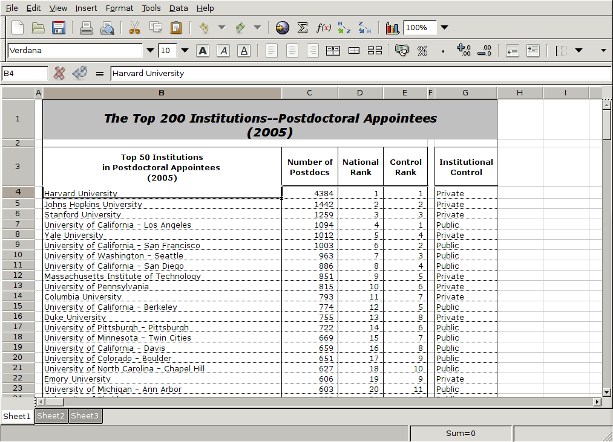
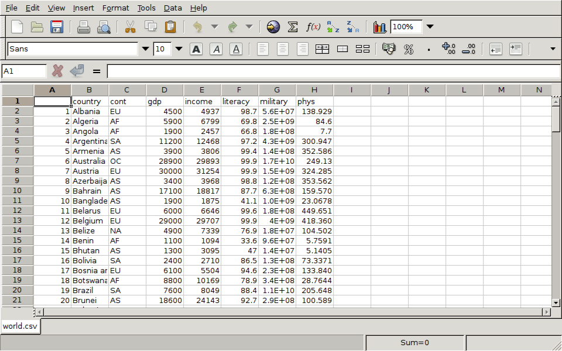

Spreadsheets
As a simple example, consider a spreadsheet with listings for the top 200
educational institutions in the US with respect to the number of postdoctoral
students, which I found at http://mup.asu.edu/Top200-III/2_2005_top200_postdoc.xls
Here's a view of how the data looks in the UNIX gnumeric spreadsheet:

Here are the first few lines of the file created when I use File->Save As,
and choose the CSV format:
"The Top 200 Institutions--Postdoctoral Appointees
(2005)",,,,,
,,,,,
"Top 50 Institutions
in Postdoctoral Appointees
(2005)","Number of Postdocs","National Rank","Control Rank",,"Institutional
Control"
"Harvard University",4384,1,1,,Private
"Johns Hopkins University",1442,2,2,,Private
"Stanford University",1259,3,3,,Private
"University of California - Los Angeles",1094,4,1,,Public
"Yale University",1012,5,4,,Private
"University of California - San Francisco",1003,6,2,,Public
"University of Washington - Seattle",963,7,3,,Public
"University of California - San Diego",886,8,4,,Public
"Massachusetts Institute of Technology",851,9,5,,Private
"University of Pennsylvania",815,10,6,,Private
"Columbia University",793,11,7,,Private
"University of California - Berkeley",774,12,5,,Public
While the data itself looks fine, it's unlikely that the header information
will be of much use. Since there are 7 header lines, I could use the
following statements to read the data into R:
> fromcsv = read.csv('2_2005_top200_postdoc.csv',header=FALSE,skip=7,stringsAsFactors=FALSE)
> dim(fromcsv)
[1] 206 6
> head(fromcsv)
V1 V2 V3 V4 V5 V6
1 Harvard University 4384 1 1 NA Private
2 Johns Hopkins University 1442 2 2 NA Private
3 Stanford University 1259 3 3 NA Private
4 University of California - Los Angeles 1094 4 1 NA Public
5 Yale University 1012 5 4 NA Private
6 University of California - San Francisco 1003 6 2 NA Public
The fifth column can be removed (take a look at the spreadsheet to see why),
and we should supply some names to the spreadsheet. One problem with this
spreadsheet is that it repeats its header information several times part way
through the spreadsheet. These lines will have to be removed manually.
The can be identified by the fact that the sixth variable should be either
Public or Private, and could be eliminated as follows:
> fromcsv = fromcsv[fromcsv$V6 %in% c('Public','Private'),]
The fifth variable can be removed by setting it to NULL, and the
columns can be named.
> fromcsv$V5 = NULL
> names(fromcsv) = c('Institution','NPostdocs','Rank','ControlRank','Control')
Finally, a check of the columns shows that, because of the header problem,
the numeric variables explicitly need to be converted:
> sapply(fromcsv,class)
Institution NPostdocs Rank ControlRank Control
"character" "character" "character" "character" "character"
> fromcsv[,c(2,3,4)] = sapply(fromcsv[,c(2,3,4)],as.numeric)
A similar procedure could be carried out with read.xls, although it
might take some experimentation with skip= to make things work
properly. The only other difference between read.xls and read.csv
for this example is that a space mysteriously appeared at the end of one of the
variables when using read.xls:
library(gdata)
fromreadxls = read.xls('2_2005_top200_postdoc.xls',stringsAsFactors=FALSE,header=FALSE,skip=2)
fromreadxls = fromreadxls[-1,-c(1,6)]
fromreadxls$V7 = sub(' $','',fromreadxls$V7)
fromreadxls = fromreadxls[fromreadxls$V7 %in% c('Public','Private'),]
fromreadxls[,c(2,3,4)] = sapply(fromreadxls[,c(2,3,4)],as.numeric)
names(fromreadxls) = c('Institution','NPostdocs','Rank','ControlRank','Control')
1 Writing Spreadsheets
As with reading a spreadsheet, one option for writing a spreadsheet is
to write out a comma- or tab-separated file, and to use a spreadsheet
program to read it and then save it as a ".xls" file. The
write.csv, and write.table functions are useful in
this regard. For example, we could create a comma-seperated version
of the world data frame as follows:
> write.csv(world,file='world.csv')
Here's the result of reading the csv file with a spreadsheet program:

The File->Save As menu would allow saving the
spreadsheet in an appropriate format.
To automate the process of writing spreadsheets, the Windows-only
xlsReadWrite package provides a write.xls function;
for other operating systems, this function is provided by the
dataframe2xls package.
File translated from
TEX
by
TTH,
version 3.67.
On 9 Mar 2011, 16:12.